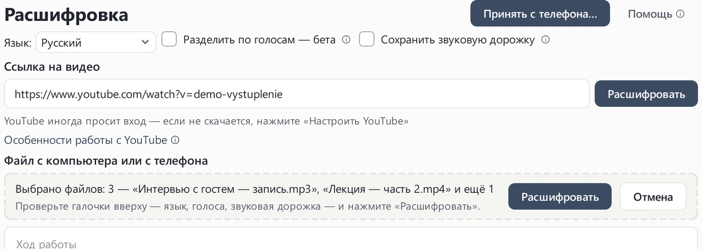

Как расшифровать аудио или видео в текст
Добавьте запись
Откройте раздел «Расшифровка» и выберите файл. Подойдут MP3, WAV, M4A, MP4, MKV и другие форматы. Можно добавить сразу несколько записей.
Выберите язык
Для русскоязычного интервью укажите русский. Если в разговоре участвовали несколько человек, включите разделение по голосам.
Проверьте и сохраните
Откройте результат в редакторе. Прослушайте спорное место, поправьте имена и сохраните нужные фрагменты в документ.
